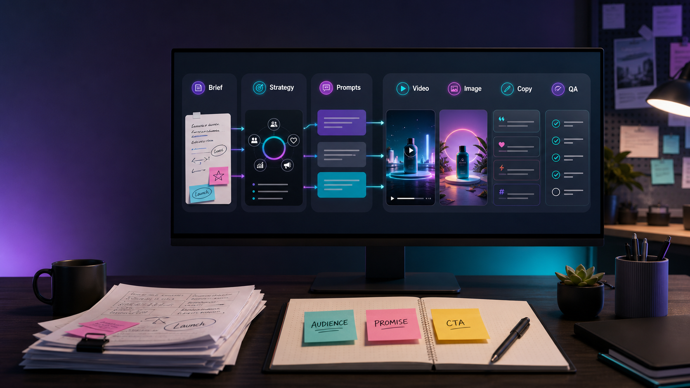

MODEL GUIDE
GPT-5.5 for creative workflows: what creators and marketers should know.
OpenAI presents GPT-5.5 as a step forward for agentic coding, knowledge work, scientific research, tool use, and long-running tasks. For creators and marketers, the valuable question is not whether the model is impressive. It is how to use that extra reasoning to create better campaign assets.

Summary for fast readers
- Use GPT-5.5 for multi-step creative work: brief expansion, asset maps, campaign strategy, prompt packs, and review.
- Do not use it as the only source of truth for model claims, pricing, product details, or legal language.
- For SEO and AI discovery, publish the workflow, source note, prompt examples, limitations, and update date in readable HTML.
- In ChatArt Pro, use the plan to create connected video, image, music, caption, ad-copy, and landing-page assets.
SEARCH INTENT
Who this guide is for.
This guide is for creators, social teams, growth marketers, product marketers, and content leads who want to understand where GPT-5.5 fits in a real production workflow. It is not a benchmark recap. It is a practical guide for turning a stronger reasoning model into better briefs, stronger prompts, and cleaner campaign asset packs.
If your task is a single caption, a smaller model may be enough. If your task is a launch package with video scripts, product visuals, landing-page angles, ad hooks, creator talking points, and review criteria, GPT-5.5-style planning can create real leverage.
WHAT OPENAI SAYS
GPT-5.5 is framed around complex work, not isolated outputs.
OpenAI's release note, published April 23, 2026 and updated April 24, 2026 for API availability, describes GPT-5.5 as stronger at agentic coding, knowledge work, scientific research, tool use, and long-horizon tasks. It also emphasizes efficiency, including fewer tokens on some Codex tasks and real-world serving latency comparable to GPT-5.4 per token.
For marketing teams, the important translation is this: GPT-5.5 should be tested on workflows that require memory of constraints, planning across steps, and critique of the output. A model that can hold the campaign structure together is more valuable than a model that only writes a clever headline.
BEST USE CASES
Where GPT-5.5 can improve campaign production.
| Creative job | How GPT-5.5 helps | What to verify before launch |
|---|---|---|
| Campaign brief expansion | Turns a messy product note into audience, promise, objections, hooks, asset list, and review criteria. | Product claims, offer terms, target audience assumptions, and brand positioning. |
| Video and image prompt planning | Creates connected prompts for hero clips, product shots, thumbnails, campaign visuals, and ad scenes. | Model limits, 4K availability, duration, text accuracy, aspect ratio, and commercial-use rules. |
| Landing-page and ad copy | Builds headline systems, objections, benefit proof, CTA options, and test variants from one message. | Claims, testimonials, compliance requirements, and pricing language. |
| Creator content packs | Adapts one idea into TikTok, Reels, Shorts, caption, cover, and paid-social variants. | Platform fit, hook clarity, visual continuity, and whether each asset still matches the original promise. |
| Asset QA | Reviews whether the video, image, caption, ad, and landing-page angle still tell the same story. | Unsupported claims, unclear CTA, inconsistent tone, and missing review notes. |
WORKFLOW
A practical GPT-5.5 planning flow for ChatArt Pro.
- Start with a real brief. Include product, audience, pain point, promise, channels, offer, constraints, deadline, and any phrases the brand will not use.
- Ask for the campaign spine. Request one core promise, three proof angles, key objections, and a short creative thesis. This keeps the asset pack from drifting.
- Generate an asset map. Ask for the hero video, product visual, thumbnail, social caption, paid-social hooks, landing-page hero angle, and music mood.
- Turn each item into prompts. Convert the asset map into prompts for video, image, copy, and music direction. Include aspect ratio, CTA space, visual continuity, and brand tone.
- Create in ChatArt Pro. Generate the first route, review it as a package, and expand only the strongest direction into variants.
- Run final QA. Check factual claims, CTA clarity, consistency, platform fit, and whether the assets still answer the audience's actual problem.
EXAMPLE SCENARIO
From SaaS launch brief to seven usable assets.
Imagine a lightweight planning app for solo creators. The audience has scattered notes, half-finished ideas, and no weekly publishing rhythm. The campaign promise is: turn messy ideas into a clear weekly content plan in one focused session.
Hero video
A 12-second before-and-after clip: cluttered notes, one planning action, then a clean weekly calendar.
Key visual
A calm desk scene with a phone and laptop showing organized content blocks, leaving safe space for headline text.
Caption set
Short hooks for overwhelmed creators, benefit-driven captions, and proof-style variants for paid social.
Landing-page angle
Headline and subhead focused on relief: stop losing ideas, start shipping a weekly plan.
GPT-5.5 should help decide the structure and review the consistency. ChatArt Pro should help create the actual visual, video, copy, and music directions from that structure.
PROMPTS TO COPY
Use GPT-5.5 as the planner before generation.
Turn this campaign brief into a production-ready asset map. Include the core promise, audience insight, hero video concept, three image directions, thumbnail text, caption hooks, paid-social variants, landing-page angle, music mood, and QA checklist.
Create prompts for a video model, image model, copywriting model, and music direction from the same creative route. Keep the brand tone consistent and include platform-specific notes for TikTok, Reels, paid social, and landing-page hero use.
Review this asset pack as a campaign editor. Identify message drift, unsupported claims, unclear CTA, visual inconsistency, weak platform fit, and missing review notes. Return a prioritized fix list.
BAD VS BETTER
Better prompts give GPT-5.5 a campaign system to manage.
| Weak prompt | Better prompt | Why it works |
|---|---|---|
| Make a launch campaign for my app. | Create a launch asset system for a planning app for solo creators. Promise: turn messy ideas into a weekly content plan. Need hero video, key visual, caption hooks, paid-social variants, landing-page angle, and QA checklist. | The better prompt gives audience, product, promise, channels, and output types. |
| Write better ad copy. | Write 12 ad hooks from this campaign promise. Split them into pain, benefit, proof, curiosity, and direct-response angles. Do not add claims not present in the brief. | It controls structure and reduces unsupported claims. |
| Check this campaign. | Review this asset pack for message drift, visual inconsistency, unclear CTA, unsupported claims, and platform mismatch. Return a table with issue, risk level, and fix. | It turns review into a repeatable editorial process. |
FAQ
Common questions about GPT-5.5 in creative workflows.
Is GPT-5.5 mainly for coding?
No. OpenAI emphasizes coding, but also knowledge work, documents, spreadsheets, research, and tool use. Creative teams should test it on complex planning and review tasks, not just code.
Can GPT-5.5 create the final video or image asset?
Use it mainly to plan and critique. For production, use ChatArt Pro to create video, image, music direction, captions, ad copy, and campaign materials in one workflow.
What makes this useful for SEO content?
The page should answer a concrete user question, include practical workflows, cite sources, show limitations, provide examples, and keep important facts in readable HTML rather than only in images.
NEXT STEP
Turn the GPT-5.5 plan into a real asset pack.
Use the workflow above to create a connected campaign route, then generate videos, images, captions, ad copy, and music direction in ChatArt Pro.